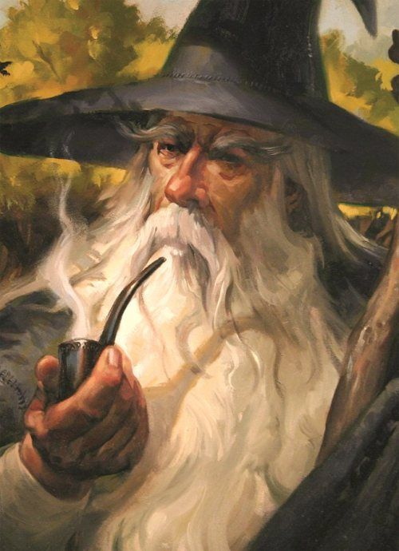

Armani
Görkem FİLİZÖZ tarafından canlandırılmış ve oynanmıştır. Görkem'in ikinci karakteridir. Armani Escar Ormanları'nda Daffru kabilesinde doğmuş ve büyümüş bir yarı Orc'tur. Babası kabilesinden hangi avcı olduğu bilinmese de bir avcıdır, annesi ise Escar Ormanları girişindeki civar köylerden kaçırılmış bir insandır. Rızasız bir ilişkinin sonunu oluşmuş bir üründür. Orcların üremek için insan veya diğer ırkların kadınlarını kaçırdıkları durumda, bu rızasız girilen ilişkiler silsilesinden ötürü çocukların spesifik olarak kimden olduğu seçilemeyeceğinden ötürü, ilişki sırasında orada bulunan bütün erkek orclar, orada doğan bütün çocukların hepsinin babaları sayılır. Bob da, kabilenin avcılarının sırası geldiğinde ilişkiye girdiklerin kadınlardan birinin ürünüdür. Kabilesinin Totem öğretilerini benimsemiş ve aynı kim olduğunu kişi olarak tanımadığı babası gibi bir avcı olarak yetiştirilmiştir. Bir gün Bob yeterince büyüdükten sonra, kabilesinin ona ve onun yaşıtlarına verdiği bir av niteliğinde görev ile, üremesi için bir kadın kaçırma ile görevlendirildi, böyleye erkekliğini kanıtlayacaktı. Fakat Escar Ormanları civarlarındaki köylerden birine saldırdıkları vakitte, Bob'un ismini bilmediği, fakat ismi Yeminli Alev olan gezgin bir Paladin Grubu'nun o köye yapılan baskına yetişmesi yüzünden Orclar katledilmiş, yaşayanlar ise esir olarak alınmıştı. Bob kendisi gibi birkaç yaşıtı ile birlikte esir düşmüştü ve bu şekilde Beyaz Şehir'in yolunu tuttular. Uzun bir yol boyunca esir şeklinde yolculuk etmek ve evinden koparılmak zorunda kalmış Bob, ortak lisanda bile konuşmasını bilmiyordu. Yol boyunca hayatının o anına kadar en acınası dönemlerini yaşamıştı. Bu hayatı sorguladığı ve esirliğin neye benzediğini yaşadığı uzun yolculuğun sonunda Beyaz Şehir'e gelmişti. Köye yaptıkları baskın sırasında, kendini bir savaşçı olarak öne çıkardığı için Bob'u Beyaz Şehir Büyük Arenası'na bir Gladyatör olarak sattılar. Hayatının bu döneminden sonrasını köle olarak geçireceği, satılması ile kesinleşmişti...
Armani,
Armani,
Armani,
Armani
Armani ismi, İmparatorluk tarafından tanınmıştır. Imparatorluk tarafından kendisine "Kahraman" ünvanı verilmiştir. İmparatorluk Bob'u diğer kölelere örnek olsun diye, tarihinde ilk defa bir köleyi Tanrı Anıtları'na kazıtmıştır. Bob'un ismi arkadaşlarının en altına kazınmıştır. Gururlu, Imparatorluğa fayda sağlamış ve ihtiyaç duyulduğunda imdada yetişmiş bir kahraman olarak nitelendirilmektedir. Bütün kölelerin, eğer yeterince çalışırslarsa, bir gün onun gibi olabileceğini gösteren bir silüet haline gelmiştir. Köle olmasına rağmen, seveni ve saygı duyanı olacak şekilde hatırlanacaktır...